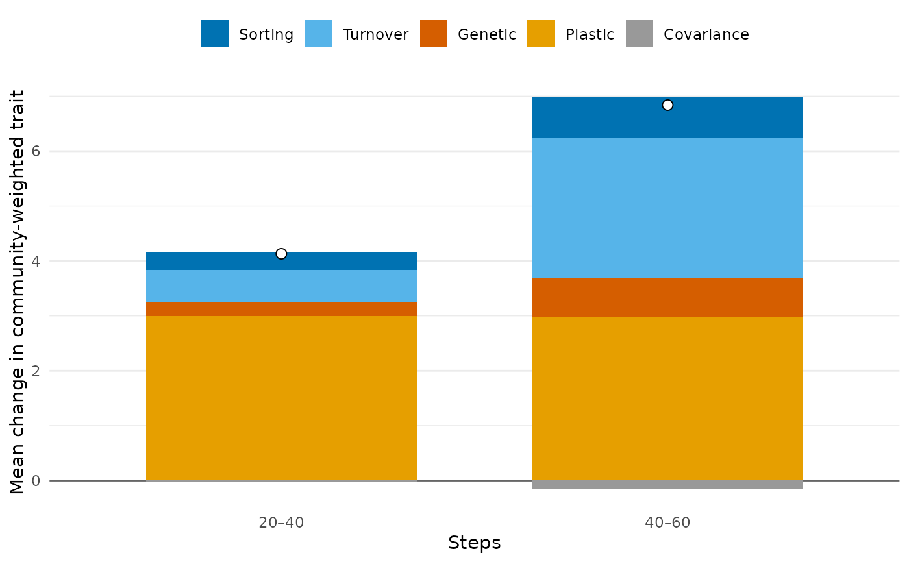

Splits the change of the community-weighted mean trait between recorded steps into the change in the relative abundance of species (sorting), the arrival and loss of species (turnover), the change within species and their covariance, and splits the change within species into a genetic and a plastic part when the genetic means are known. For a simulation with evolution, it can also split the change in the growth rate of each population into the effects of evolution, plasticity and the environment, following the genotype-phenotype-environment partition of Ellner et al. (2011).
Usage
trait_change(
x,
steps = NULL,
growth = NULL,
trait = "trait",
genetic = NULL,
site = "site",
species = "species",
step = "step",
abundance = "abundance"
)Arguments
- x
A simulation with
evolutionandrecord_steps(fromsimulate_metacommunity()orsimulate_evolving_metacommunity()), or a data frame with one row per population and step and the columns named bysite,species,step,abundance,traitand, optionally,genetic.- steps
The steps to compare, in increasing order; consecutive pairs are compared. At least two.
NULL(the default) takes all recorded steps.- growth
Also split the change in the growth rate of each population?
TRUEorFALSE;NULL(the default) isTRUEfor a simulation with one evolving trait andFALSEotherwise. Not available for data frames.- trait
For a data frame, the name of the column with the mean phenotype of each population. For a simulation with several evolving traits, the name or number of the trait; ignored with one trait.
- genetic
For a data frame, the name of a column with the genetic mean of each population (from a common garden, for example), or
NULLto leave the change within species unsplit. One character string orNULL.- site, species, step, abundance
For a data frame, the names of its columns with the site, the species, the step (numbers) and the abundance of each population. One character string each.
Value
A list of class trait_change with community, a data frame with one row per
site and pair of steps (site, from, to, mean_from, mean_to, total, sorting,
turnover, within, covariance, genetic, plastic, cov_genetic, cov_plastic),
and growth, a data frame with one row per population present at both steps of each
pair (site, species, from, to, total, genetic, plastic, environment) or
NULL. summary() averages them over sites and populations, and
plot() draws the averages.
Details
Community level. In each site, with \(p_j\) the relative abundance of species \(j\) and \(z_j\) its mean phenotype, the community mean is \(\bar z = \sum_j p_j z_j\). Between two steps (0 and 1), its change is split without residual into
sorting: \(\sum_S \Delta p_j z_{j0}\), over the species \(S\) present at both steps;turnover: \(\sum_{gained} p_{j1} z_{j1} - \sum_{lost} p_{j0} z_{j0}\), the species that arrived or were lost;within: \(\sum_S p_{j0} \Delta z_j\), the change within species;covariance: \(\sum_S \Delta p_j \Delta z_j\), positive when the species that increased are those whose trait changed in the same direction as the mean.
This is the temporal counterpart of the partition among sites of trait_flex()
(Lepš et al. 2011). Among the species present at both steps it follows the Price (1970)
equation, with the relative abundance in place of fitness: sorting is its selection term
(the covariance between relative growth and trait) and within plus covariance its
transmission term (the change within species, weighted by the abundances at step 1), as in
the continuous-time form used by Ellner et al. (2011). As the phenotype is the genetic
mean plus the plastic part, \(z_j = g_j + b_j (E - E_0)\),
within and covariance are
each the sum of a genetic part (genetic, cov_genetic, from \(\Delta g_j\)) and a
plastic part (plastic, cov_plastic, from the change in the plastic part). Without
genetic means (a data frame without genetic), these parts are NA. Sites empty at
either step give NA.
In a simulation, the phenotype of a population is its genetic mean plus its plastic
response to the environment of the site at that step, as in its growth; the phenotype
recorded by simulate_metacommunity() after dispersal, which mixes in immigrants still
carrying the response to their site of origin, is not used.
Population level (growth = TRUE). For each population present at both steps, the
response is its per-capita growth rate, \(X = \log \lambda\), with
\(\lambda\) the Gaussian niche response of the simulation (the growth rate of a
population of mean phenotype \(z\) and phenotypic variance \(G + V_E\) in
environment \(E\)). Ellner et al. (2011, eqns 5 and 6) split the rate of change of
such a response into evolution (the change of the genetic mean), non-heritable trait change
(here plasticity) and the direct effect of the environment, through its partial
derivatives in continuous time. For changes between samples, Hairston et al. (2005, eqn 8)
compute the effect of evolution and of ecological change on \(X\) by moving one
variable at a time from its value at step 0 to its value at step 1 and averaging the two
orders (evolution first or ecology first). The same is done here with three components
(genetic mean, plastic part, environment): the contribution of each is its effect averaged
over the six orders of change (the Shapley value), which reduces to their eqn 8 with two
components, so that genetic, plastic and environment add up to the change in
\(X\) exactly. The phenotypic variance is held at
\(G + V_E\) of the settings, so that \(X\) depends on the trait only through
its mean (the "population mean assumption" of Ellner et al. 2011); with mutation_var,
loci or variance_selection, where the variance of each population changes, the
partition ignores that change. It needs a simulation with one evolving trait and a table
of traits with sigma and r_max.
References
Ellner, S. P., Geber, M. A., & Hairston, N. G. (2011). Does rapid evolution matter? Measuring the rate of contemporary evolution and its impacts on ecological dynamics. Ecology Letters, 14, 603–614. doi:10.1111/j.1461-0248.2011.01616.x
Hairston, N. G., Ellner, S. P., Geber, M. A., Yoshida, T., & Fox, J. A. (2005). Rapid evolution and the convergence of ecological and evolutionary time. Ecology Letters, 8, 1114–1127. doi:10.1111/j.1461-0248.2005.00812.x
Lepš, J., de Bello, F., Šmilauer, P., & Doležal, J. (2011). Community trait response to environment: disentangling species turnover vs intraspecific trait variability effects. Ecography, 34, 856–863. doi:10.1111/j.1600-0587.2010.06904.x
Price, G. R. (1970). Selection and covariance. Nature, 227, 520–521. doi:10.1038/227520a0
See also
trait_flex() for the partition among sites, evolution_control().
Other trait variation among individuals:
coef.drift_test(),
coef.mc_trait_gradient(),
coef.population_shifts(),
community_index(),
drift_test(),
neighbour_metrics,
nested_variance(),
null_intervals(),
plot.mc_trait_gradient(),
plot.mc_trait_gradient_bayes(),
plot.mc_trait_gradient_phylo(),
plot.nested_variance(),
plot.trait_flex(),
plot.trait_rarefaction(),
plot.tstats(),
plot_population_traits(),
population_shifts(),
population_stats(),
print.trait_flex(),
sample_individuals(),
subsample_individuals(),
trait_densities(),
trait_flex(),
trait_gradient(),
trait_gradient_bayes(),
trait_gradient_phylo(),
trait_gradient_test(),
trait_gradient_weights(),
trait_rarefaction(),
tstats(),
tstats_summary()
Examples
set.seed(8)
ls <- landscape_grid(4)
tr <- ape::rcoal(4)
warming <- outer(ls$env, 0.5 * seq_len(60), "+")
sim <- simulate_metacommunity(ls, species_traits(tr), competition_matrix(tr, "phylo"),
n_steps = 60, record_steps = c(20, 40, 60),
env_time = warming,
evolution = evolution_control(1, plasticity = 0.3))
res <- trait_change(sim)
summary(res)
#> $community
#> from to sites total sorting turnover within covariance genetic
#> 1 20 40 16 4.131249 0.3248678 0.599777 3.241487 -0.03488294 0.2442858
#> 2 40 60 16 6.839728 0.7508296 2.560395 3.677656 -0.14915226 0.6892079
#> plastic cov_genetic cov_plastic
#> 1 2.997201 -0.01718681 -0.01769612
#> 2 2.988448 -0.08032792 -0.06882434
#>
#> $growth
#> from to populations total genetic plastic environment abs_genetic
#> 1 20 40 20 -0.2006079 0.05391784 0.10908244 -0.3636081 0.08163840
#> 2 40 60 20 -0.1593284 0.04639991 0.08816927 -0.2938976 0.06666017
#> abs_plastic abs_environment
#> 1 0.2641327 0.8804424
#> 2 0.2430454 0.8101514
#>
if (requireNamespace("ggplot2", quietly = TRUE)) plot(res)

# field data: phenotypes over time, without genetic means
d <- data.frame(site = "a", species = rep(c("x", "y"), 2), step = rep(1:2, each = 2),
abundance = c(10, 10, 5, 15), trait = c(1, 3, 1.5, 3))
trait_change(d)$community
#> site from to mean_from mean_to total sorting turnover within covariance
#> 1 a 1 2 2 2.625 0.625 0.5 0 0.25 -0.125
#> genetic plastic cov_genetic cov_plastic
#> 1 NA NA NA NA